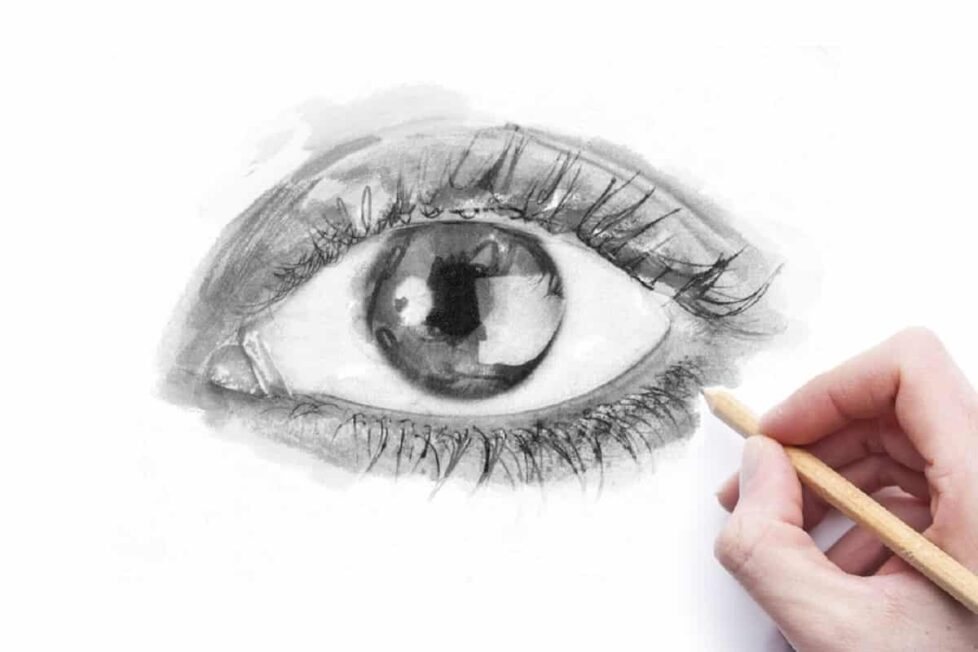
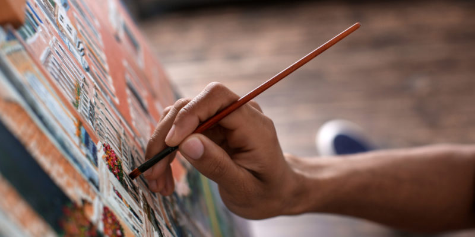
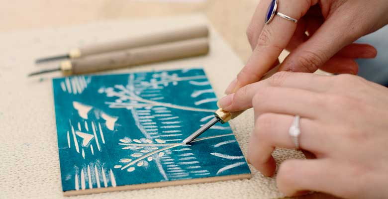
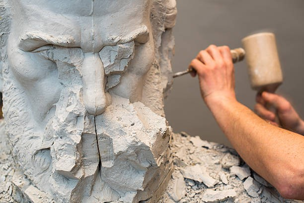

.png)
Tecnicas de arte
Las técnicas de arte son muy variadas y cada artista tiene su forma de abordarlas. Aun así, hay algunas técnicas básicas que todo artista debe conocer. En este blog, hablaremos sobre algunas de ellas.
Dibujo
El dibujo es una técnica fundamental en el arte, ya que sirve como base para desarrollar otras técnicas artísticas. Es importante tener una base sólida en dibujo, ya que te permitirá comprender los fundamentos del arte, como la composición, la perspectiva y el manejo de las formas y líneas.
Al dominar el dibujo, podrás plasmar tus ideas y representar diferentes objetos, personas, paisajes y emociones de manera más precisa y detallada. Además, el dibujo te ayudará a desarrollar habilidades como la observación, la coordinación mano-ojo y la capacidad de representar volúmenes y texturas.
Para mejorar tus habilidades en el dibujo, puedes practicar regularmente, experimentar con diferentes técnicas y materiales, y estudiar obras de artistas reconocidos para inspirarte y aprender de su estilo y enfoque. También puedes tomar clases de dibujo o buscar tutoriales en línea que te enseñen técnicas específicas.
Recuerda que el dibujo es una habilidad que se desarrolla con la práctica constante, por lo que te animo a dedicar tiempo regularmente a esta técnica y explorar diferentes estilos y enfoques para encontrar tu propio estilo único. ¡Diviértete y disfruta del proceso de dibujar!

Pintura
La pintura es una técnica artística muy versátil que ofrece una amplia gama de posibilidades creativas. Desde los colores vibrantes y la rápida sequedad del acrílico hasta los tonos suaves y la mezcla suave del óleo, cada tipo de pintura tiene sus propias características y ventajas.
El acrílico es una pintura a base de agua que se seca rápidamente, lo que permite trabajar de manera más rápida y eficiente. Es ideal para proyectos que requieren capas rápidas y superposiciones de colores. Además, el acrílico es resistente al agua una vez seco, lo que lo hace adecuado para proyectos al aire libre o que requieren durabilidad.
Por otro lado, el óleo es una pintura a base de aceite que se seca lentamente, lo que permite un mayor tiempo de trabajo y la posibilidad de mezclar colores de manera más suave. El óleo ofrece una mayor profundidad y riqueza de color, así como la capacidad de crear texturas y efectos especiales. Sin embargo, el óleo requiere más tiempo de secado y cuidado en términos de limpieza de pinceles y materiales.
La elección entre acrílico y óleo dependerá de tus preferencias personales, el efecto que deseas lograr y el tiempo que estés dispuesto a invertir en tu proyecto. Ambas opciones pueden proporcionar resultados brillantes y hermosos, pero cada una tiene sus propias características únicas.
Si estás buscando un acabado brillante, puedes lograrlo con ambas pinturas. En el caso del acrílico, puedes aplicar una capa de barniz brillante una vez que la pintura esté completamente seca. Esto resaltará los colores y agregará un brillo adicional a tu obra. En el caso del óleo, también puedes aplicar un barniz brillante una vez que la pintura esté completamente seca para lograr un acabado brillante y proteger la obra.
En resumen, tanto el acrílico como el óleo son excelentes opciones para la pintura, cada uno con sus propias características y ventajas. La elección dependerá de tus preferencias personales y del efecto que desees lograr en tu obra. Recuerda experimentar y explorar diferentes técnicas para encontrar tu propio estilo y disfrutar del proceso creativo.

Grabado
El grabado es una técnica artística que consiste en tallar una imagen en una superficie dura, como madera, metal o linóleo, y luego imprimir esa imagen en papel u otro soporte. Se considera una forma de arte de impresión y ha sido utilizada durante siglos para crear obras de arte detalladas y expresivas.
Existen diferentes tipos de grabado, cada uno con sus propias características y técnicas. Algunos de los métodos de grabado más comunes incluyen:
1. Grabado en madera: También conocido como xilografía, es una técnica en la que se talla una imagen en un bloque de madera. La parte tallada se entinta y luego se imprime aplicando presión sobre el papel.
2. Grabado en metal: Este tipo de grabado se realiza en placas de metal, como cobre, zinc o acero. La imagen se talla o se graba químicamente en la placa, y luego se aplica tinta sobre la superficie grabada. Luego, se limpia la superficie, dejando tinta solo en las áreas grabadas. Finalmente, se coloca papel sobre la placa y se aplica presión para transferir la imagen al papel.
3. Grabado en linóleo: El grabado en linóleo es similar a la xilografía, pero se realiza sobre una plancha de linóleo en lugar de madera. La imagen se talla en la superficie del linóleo utilizando herramientas especiales, y luego se aplica tinta y se imprime sobre papel.
El grabado es una técnica que requiere habilidad, paciencia y precisión. Los grabados pueden tener una amplia gama de estilos y efectos, desde líneas finas y delicadas hasta texturas más gruesas y expresivas. Es una forma de arte versátil que se puede utilizar para crear ilustraciones, estampados, libros ilustrados y mucho más.
Si estás interesado en aprender grabado, puedes buscar talleres o cursos que enseñen las técnicas y procesos específicos. Experimentar con diferentes materiales y herramientas también puede ser una forma divertida de explorar y desarrollar tus habilidades en el grabado.
El grabado es una forma de arte fascinante que ha dejado una huella duradera en la historia del arte. Si te apasiona la expresión artística y el trabajo manual, el grabado puede ser una técnica emocionante para explorar y desarrollar tu propio estilo creativo.

Escultura
La escultura es una forma de arte que se caracteriza por la creación de formas tridimensionales utilizando diversos materiales como piedra, madera, metal, arcilla, entre otros. A diferencia de la pintura o el dibujo, la escultura permite al artista trabajar en el espacio, creando obras que pueden ser apreciadas desde diferentes ángulos y perspectivas.
La escultura ha existido desde tiempos antiguos y ha evolucionado a lo largo de la historia, reflejando las diferentes culturas y estilos artísticos de cada época. Desde las esculturas clásicas de la antigua Grecia y Roma, hasta las obras abstractas y contemporáneas de hoy en día, la escultura ha sido una forma de expresión artística muy importante.
Los escultores utilizan una variedad de técnicas y herramientas para dar forma a sus obras. Algunas de las técnicas más comunes incluyen el tallado, la modelado, la fundición y la soldadura. Cada técnica requiere habilidad y conocimiento específico, y los escultores a menudo se especializan en un estilo o material particular.
La escultura puede abordar una amplia gama de temas y conceptos, desde la representación de figuras humanas y animales, hasta la exploración de formas abstractas y simbólicas. Los escultores pueden trabajar en diferentes escalas, desde pequeñas esculturas de escritorio hasta monumentales obras públicas.
Además de su valor estético, la escultura también puede tener un significado simbólico o narrativo. Muchas esculturas han sido creadas para conmemorar eventos históricos, honrar a personas importantes o transmitir mensajes políticos y sociales.
En resumen, la escultura es una forma de arte tridimensional que permite a los artistas crear obras únicas y expresivas utilizando una variedad de materiales y técnicas. Es una forma de expresión artística que ha existido desde tiempos antiguos y sigue siendo relevante en la actualidad, desafiando los límites de la creatividad y la imaginación.
